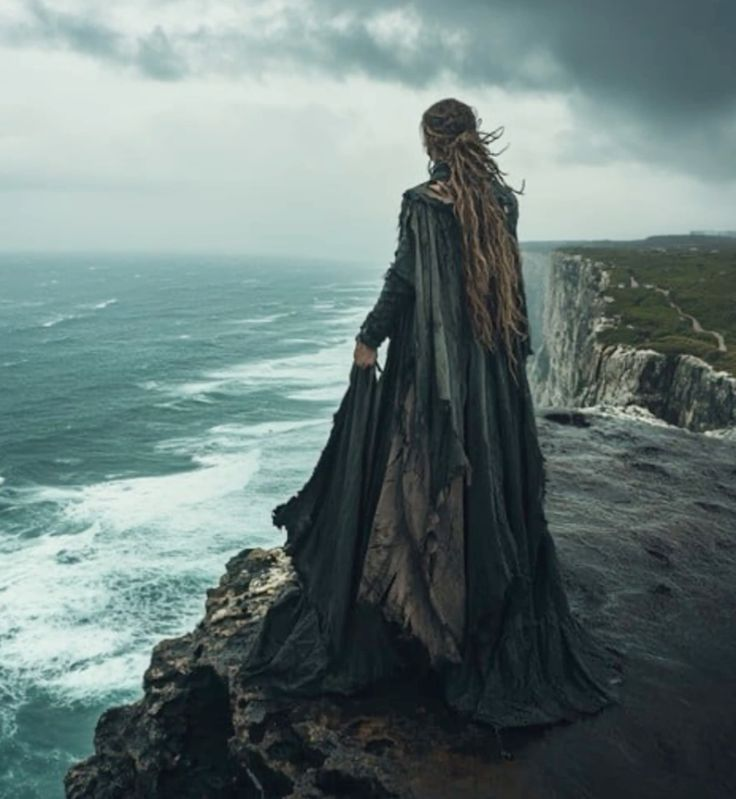
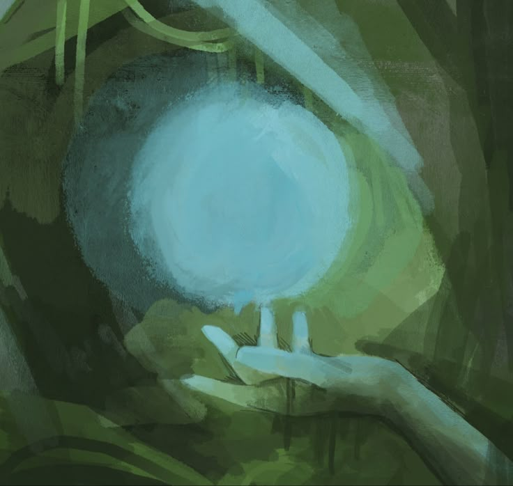

White cliffs sprawled beneath Sough as she peered below. The Great Sea lapped at the feet of shore, slowly turning rock into sand. It was a dizzying height, and the cold winds carried from the water below shot up from the face of the cliffs, causing her brown hair to tumble out behind her and painting her fair face red with cold. The new grass crept beneath her, and she continued to peer over the cliffs, searching the shore. A sense of anxiety, or maybe excitement, grew within her. It really is hard to tell sometimes, whether one is anxious or excited. Both emotions create the same feeling in your stomach, like you’ve swallowed something heavy, and then you just want to move around and get it out, but it only grows as time crawls by. Spring smells stretched before Reigh as he searched the shoreline before him. The Cliffs of Newshire reached heavenward beside him, and the cold water tried to nip his toes in the sand. The white cliffs stretched into the horizon, both forward and behind, and above, they protected the small town of Newshire from the violent storms that came in from the coast. Born out of that tumult, small stones are crushed again and again by the raging seas into the stony face, and are ground into perfect spheres, polished by the receding sand. Reigh was on the shore, searching for one of these stones. After all, it is customary that a man present one of these stones to any woman he desires to make his wife. Treading upon the shore, Reigh watched for the glow that the stones emit. The smaller the stone, the greater a proposal it is. Any man can find a bodoc the size of a man's head, but it takes skill and determination to find one the size of a grape. The men of Newshire, over the years, have made a sport of scaling her walls to touch the sea below, but it is not safe. When the waters are safest, they are high, and there is often little shore to tread upon. Now, when the shore is broadest, a person can find a bodoc, but now is also the time when the water will unexpectedly seize, and throw itself into the great wall. Few survive the onslaught, and no one leaves a swell unharmed.
Sough continued her vigil from above, watching the little speck that was Reigh, searching the shore with his eyes and sifting the sand with his hands whenever he grew suspicious of a patch. She could not care less what he brought back, and she’d prefer if he brought back a bodoc the size of her, so long as he was safe with her in the grass. Yet she knew Reigh would never do that. Not out of pride like some of the other boys in town, but because he would have nothing less than what he thought Sough was worth, and to him, she was priceless. The bodocs in town always shone brighter on High Nights, when the ring of the world, high in the sky, shines bright with prismatic brilliance. Reigh and his people had always assumed that they could only be stones that fell from heaven, to be ground and scourged by the harsh world. But they are not just stones, that would be like saying the Great Sea is just water. The bodocs bring health and protection. They protect mothers in labor and they keep the feet of men sturdy upon the cliff walls. Most importantly, they bring light and warmth in the long nights, when devils wail in the winds and ghouls creep in the ground, their light shines bright in the hearths of every home. And that’s when Reigh feels it, a warm patch beneath his foot. He paws the sand away with his foot, and then gets on his hands and knees, sifting the sand and digging, till he sees the glow, and feels the burning warmth of a bodoc. His fingers strike it, and upward he raises the bodoc, no larger than one of his nails. Yellow stone striped with deep red, it shines brilliantly, like the wick of an oil lamp, and is hot, hot like a metal handle left to the sun in the few summer days they have in Newshire. He quickly puts the bodoc into the leather pouch around his neck, and looks up to find Sough, right as the water throws him into the white wall of stone, and everything goes still. Sough sees the swell only moments before it catches Reigh. She had been looking nervously at the black clouds growing on the horizon, and when she looked down, she saw the too broad shore as the waters reared away from the wall, and prepared to punish the great cliffs with their mighty torrents in retaliation for their long drawn captivity. She barely had time to let out a yell before they rushed the walls, catching Reigh between them in their endless war. They swept out his feet from underneath him, and presumably threw him into the cliff wall, though he disappeared in the onslaught so quickly it was only a guess. She didn’t know what to say, one moment he was there, the next, he was gone. The waves continue to batter at the walls, and all she can imagine is his poor lifeless body, thrashed again and again between two foes who would not relent. Then, the waters recede, and she throws herself to the ground, searching frantically for any sign of him. At first she doesn’t see him, and then she finds it. A knotted mass of writhel vines still poke above the sand, beginning their steady feast. The broad vines lurk in the sands, and when water saturates them, they spring up from the sands and flail, trying to catch any unfortunate creature in its grasp to consume. And they’ve caught Reigh.

Everything is still, and quiet. Reigh feels warmth spread from his head down his body, and it feels like he's asleep. There is no need to wake, he’s safe, and comfortable, where he is. Then, a searing pain erupts from his chest, and spreads. It hurts, unlike anything he’s ever experienced. It’s the bodoc, still in its pouch tied around his neck. He can see it, the light, but faintly. Something is obscuring his vision. No, not just his vision. Something is holding him tight, squeezing the life out of him. It’s biting into his flesh, draining his blood. He is growing cold, and losing feeling in his fingers and lips. Except for where the bodoc lays, there, he still feels pain. He focuses on it, and feeling returns around it, and the—vines! Yes, they’re writhel vines—begin to loosen their grip around his chest. He wriggles and squirms, trying with all his might to shake the vines, but it's not his efforts that lose the vines, it is the stone, which grows brighter and brighter, and the vines wither in its light. He lays there, exhausted, cold, and closes his eyes once again. Sough, upon seeing the writhing mass trying to devour Reigh, could do nothing but try to help. She jumped. Not without warrant, however; you must understand that almost all of the citizens of Newshire know how to scale its cliffs, and Sough was no exception. She jumped, and with her took a reasonable amount of rope. There are metal rings driven into the stone all over Newshire, where climbers can hook and tie their ropes while they scale or repel. But most importantly, she took with her a school of windbells. They look like little jellyfish, no larger than a hand. They are held in thin netting, and tied to the fastener on her belt. When she jump, they catch the air and inflate, rapidly, and soon, she begins to gradually descend the great height, carried aloft by seven windbells, each the size of a large cow. Then, with two wood poles with hooks affixed on each end, she descends, using the ropes long ago bound to the cliff face, using them to stabilize her descent, till her feet touch the ground and the windbells return to their normal size. She rushes forward to Reign, and sees the scorched and torn flesh, the blood that seeps from wounds all over his body, and he can surely be nothing but dead. Consciousness comes slowly for Reign, but the first thing he sees is the face of Sough. Her broad features, pale green eyes and long black hair looked down on him as if an angel from Paradise. Her arms wrap around his torso, and drag him away from the dead vines. He aches everywhere, and struggles to move even his toes. But the writhel vine saved him. After he hit the cliff side, the vines grabbed him before he could be battered again and again, the vines snared him. They were his deliverance, and his damnation. Before they died, the vines ate at him. His arm was nothing but a disfigured mess, and scores of wounds marked his body from where the vines began to drain his lifeblood. Sough weeped. For what was, and for what could have been. But now, Reign was so weak in her arms, like a child. He would not survive the hour. They had walked far from Newshire before Reign even descended the cliffs, and then they had walked quite a distance separately while he searched for the bodoc. She could not get him up the cliff face alone, and even if she did, the walk would be too far, too long. When Sough was a little girl, she always dreamt of being saved by some prince, a knight from a far off land, just like one of the maidens in the stories her mother used to tell her by the hearth. Never had she imagined that she would be the handsome prince doing the saving, and upon further musing, she realized she wasn’t a handsome prince saving a damsel in distress. No, she still was the damsel, but her brave knight needed her now, more than she needed him, and so she would do everything in her power to save him. But she could not save him, and as she held him in her arms, he began to tremble, his skin pale and clammy and cold to the touch. Already, he was a dead man, yet she could not give up so easily. Her eyes drifted to the leather pouch around his neck, and she remembered before the waves claimed him, he looked up to her. Could he have found a bodoc. Was he able to vouchsafe it before the onslaught of the waters? She opened the pouch, and light spilled out. Warm light, like when the sun casts its golden rays in the hour of its death each night. Heat spills onto her fingers from inside the pouch, and she reaches inside and grabs the stone. It can be no bigger than her pinky nail, yet it glows with the strength of woodfire, heaped high with dry wood. Comforting the revelation that her love found what he was searching for, and of the quality he desired, she cannot see how it will help her. She grips the bodoc and prays not for salvation, but that the waters will come and take them both away, that they might die together. She did the only thing she could think to do, and shoved the bodoc down Reigh's throat. It was her last hope. All her life, she had been taught and believed in the power and protection given from the stones. When she was a young girl, she had awful nightmares, yet she had one in particular that was especially nasty and that would return to her often. It always started on a dirt path through the Lowerlands, the plains that grew the heartwheat that fed Newshire. She would be running along that path as someone, perhaps her father, chased her playfully. Then the wind would pick up from the north, and she would taste the salt that only storms carried above the Great Cliffs, and the chase would turn from playful to sinister, and she would run faster, like a mouse before a cat. The sky would grow darker, and the wind blow harder, and the chill would seep into her bones as she fled as she felt devils icy breath on her neck. She would run into the treeline to seek refuge in the foliage, never seeing the thing, but feeling its endless pursuit. She would finally find a small pond, and she would jump in it to hide. Once her head would go under, she would wake, but not before realizing that in her nightmare, she had not jumped a pond, but into the maw of the devil that tormented her. She would lie there, shaking and frightened, until her mother always found her. Sough was never sure how her mother knew, but it never failed that she found her on one of these nights, her bodoc glowing softly around her neck, and Sough would be held and feel the terror slip away. All those years, the bodoc that protected her home had driven away that awful nightmare, and so, she stood to reason, why shouldn't it drive away this one. Reigh was aware of the wet sand beneath him, the bright sky above him, Sough’s arms around him, but mostly, he was aware he was going to die. A part of him regretted that, or pitied it. But he didn’t feel like Reigh anymore, he felt disconnected. Reigh was going to die, but not him. And then she shoved a rock down his throat. Not a big one, but still, a rock. And it was after all the bodoc. He lay there still, and continued to. The waves lapped at the short shore, and Sough realized she hadn’t been watching the tide. It could have rushed forward and swept both of them up, and she looked down to see the water, still lapping nearby. Then Reigh began to thrash. His back arched and his eyes flew open, bulging. It took all of Sough's strength to hold onto him. She was terrified, and then began to notice the puncture wounds in his side begin to close, growing together and leaving fresh pink skin. His mangled arm, where the weed began to eat him, once raw gory, began to regrow. Not too normal, and he’d probably never be able to use the arm again, but it was no longer bleeding. Then, he vomited sea water, and it seemed like it would never end, and when he was done, he collapsed again and began to weep.